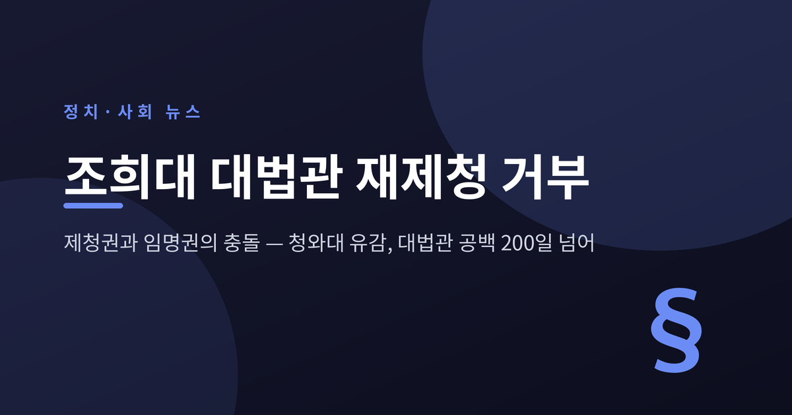
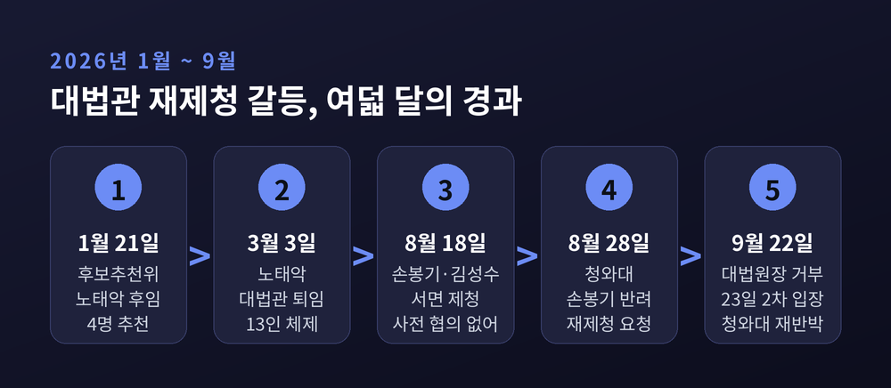
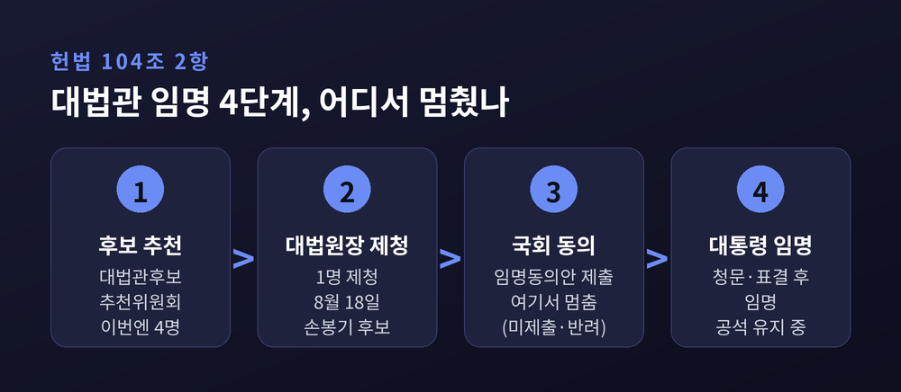
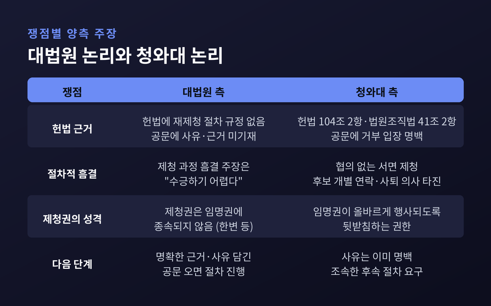
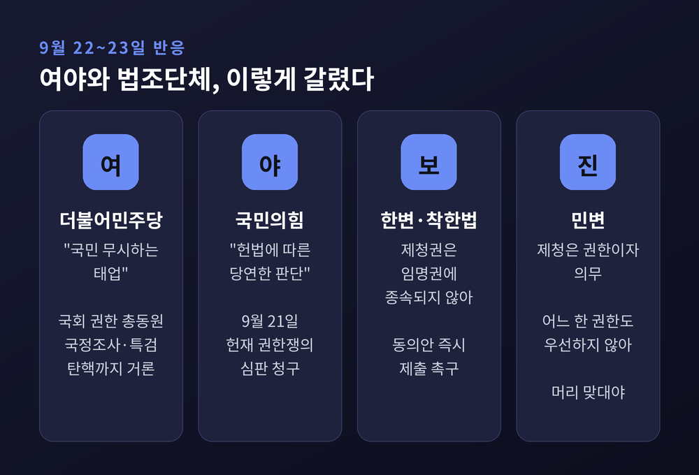
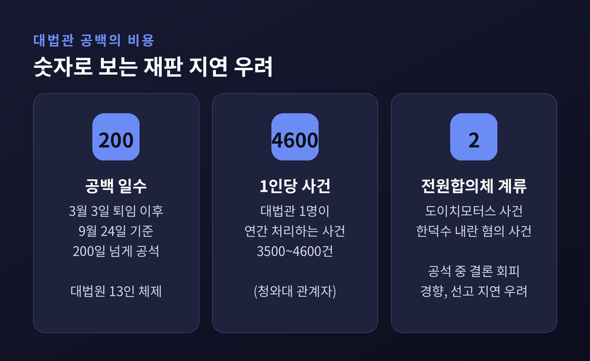
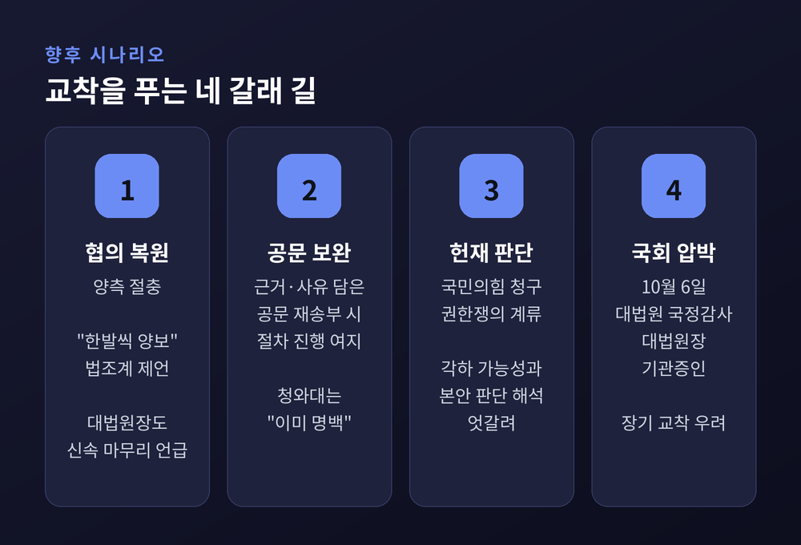

이번 글에서는 조희대 대법원장이 청와대의 대법관 후보 재제청 요청을 거부한 사안을 정리해 보겠습니다. 무슨 일이 있었는지, 왜 초유의 일로 불리는지, 양측이 각각 어떤 논리를 펴는지, 그리고 앞으로 어떤 길이 남아 있는지 차례로 짚어 봅니다. 정치적으로 민감한 사안인 만큼 대법원과 청와대, 여야와 법조계의 주장을 나란히 적겠습니다.
세 줄 요약
조 대법원장의 입장은 짧고 단호했습니다.
"재제청 요청에 응할 수 없음을 밝힌다." 근거로 든 것은 헌법 82조의 취지였습니다. 대통령의 국법상 행위는 국무총리와 관계 국무위원이 부서한 문서로 한다는 조항입니다. 청와대가 보낸 문서는 '대법관 후보자 재제청 요청'이라는 제목뿐, 구체적 사유와 헌법적 근거가 적혀 있지 않다는 것이 대법원의 설명입니다.
청와대가 8월 28일 재제청을 요청한 지 25일 만이었습니다. 하루 전인 21일, 조 대법원장은 김성수 신임 대법관 임명장 수여식에서 이재명 대통령과 마주 앉았습니다. 대통령은 그날 오후 해외 순방길에 올랐습니다.
청와대의 반응은 곧바로 나왔습니다. 대법원장의 입장은 "제청권이 대통령의 임명권보다 우위에 있다는 것으로 헌법에 위배되는 인식"이라는 비판이었습니다. 제청하면 그대로 임명해야 한다는 논리는 선출된 대통령의 임명권을 무력화한다고 했습니다. 청와대는 손봉기 후보자의 임명동의안을 국회에 내지 않은 것 자체가 반려의 의사표시이며, 헌법 104조 2항과 법원조직법 41조 2항에 근거한 조치라고 밝혔습니다.
다음 날 공방은 한 번 더 이어졌습니다. 조 대법원장은 2차 입장문에서 "8월 28일자 공문에는 재제청 요청의 사유가 명확하게 기재돼 있지 않다"고 했습니다. 공문에 형식적 하자가 있다는 뜻은 아니라고 선을 그으면서도, 문언상 근거가 제시돼야 절차를 진행할 수 있다는 입장은 그대로였습니다. 공백 장기화에 대해서는 "송구스럽다"고 했습니다.
청와대는 약 4시간 뒤 2000자 가까운 공지로 맞섰습니다. 공문에는 "누가 보더라도 대통령의 임명 거부 입장이 명백히 드러나 있다"는 주장이었습니다.

헌법 104조 2항의 문장은 간단합니다. 대법관은 대법원장의 제청으로 국회의 동의를 얻어 대통령이 임명합니다.
절차는 네 단계로 나뉩니다. 대법관후보추천위원회가 후보를 추천하고, 대법원장이 그중 한 명을 제청합니다. 대통령이 국회에 임명동의안을 내면 인사청문과 본회의 표결을 거쳐 임명에 이릅니다. 이번에는 두 번째와 세 번째 단계 사이에서 멈춰 섰습니다.
헌법에는 제청을 거절하거나 다시 제청하는 절차가 따로 적혀 있지 않습니다. 그 빈자리를 채워 온 것이 사전 협의라는 관행이었습니다. 역대 대통령과 대법원장은 미리 뜻을 맞춘 뒤 대법원장이 청와대를 찾아 제청하는 방식을 이어 왔습니다.
청와대 관계자는 1987년 현행 헌법 체제 이후 유사 사례가 없다고 했습니다. 이투데이는 이번 일을 현행 헌법상 첫 제청 반려로 규정했습니다. 관행이 멈추자, 규정이 비어 있던 자리가 그대로 드러난 셈입니다.

뿌리는 올해 초로 거슬러 올라갑니다.
1월 21일 추천위원회는 노태악 대법관 후임으로 4명을 추천했습니다. 김민기·박순영 서울고법 판사, 손봉기 대구지법 부장판사, 윤성식 서울고법 부장판사입니다. 그러나 제청은 이뤄지지 않았고, 노 대법관은 3월 3일 후임 없이 퇴임했습니다. 대법원은 그날부터 13인 체제로 운영되고 있습니다.
경향신문은 당시 양측의 이견을 이렇게 전했습니다. 대법원은 윤성식·손봉기 부장판사를 우선 검토했고, 청와대는 김민기 판사를 원한다는 관측이었습니다. 김 판사는 우리법연구회 출신이고 배우자가 오영준 헌법재판관입니다. 법원 내부에서는 부부가 최고 법관직에 나란히 앉는 것은 형평에 맞지 않는다는 반발도 있었다고 합니다.
8월 18일, 조 대법원장은 손봉기 부장판사(노태악 후임)와 김성수 서울고법 부장판사(이흥구 후임)를 한꺼번에 제청했습니다. 이번에는 청와대를 방문하지 않고 서면으로 통보했습니다. 수십 년 이어진 관례와는 다른 방식이었습니다.
열흘 뒤 청와대의 판단은 둘로 갈렸습니다. 협의가 이뤄진 김성수 후보는 국회로 보냈고, 김 대법관은 9월 21일 취임했습니다. 손봉기 후보는 임명동의안을 내지 않고 재제청을 요청했습니다.
양측의 주장을 쟁점별로 나란히 놓으면 이렇습니다.
대법원 측 논리
청와대 측 논리
법조계의 평가는 행위별로 갈립니다. 이투데이가 정리한 흐름은 이렇습니다. 대통령이 제청된 후보의 임명을 거부하는 것 자체는 임명권 행사의 범위로 볼 여지가 있습니다. 다만 남은 후보 중에서 다시 골라 오라는 요구는 제청권을 사실상 대통령이 행사하는 결과가 된다는 비판이 나옵니다. 반대로 사전 협의 관례를 깨고 서면으로 제청한 방식이 충돌의 빌미가 됐다는 지적도 함께 나옵니다.

정치권의 반응은 정반대입니다.
김민석 더불어민주당 대표는 23일 이번 거부를 "사상 초유의 위헌·위법적" 조치이자 "국민을 무시하는 태업"이라고 규정했습니다. 국회의 모든 권한을 활용해 책임을 묻겠다고 했고, 민주당 의원들은 대법원을 항의 방문했습니다. 당 안팎에서는 국정조사와 특검, 탄핵까지 거론됩니다.
국민의힘은 거부가 "헌법에 따른 지극히 당연한 판단"이라고 봤습니다. 장동혁 대표는 대통령이 특정 후보를 고집한 것이 사태의 원인이라고 주장했습니다. 대법원이 대통령 관련 재판을 재개해야 한다고도 촉구했습니다. 국민의힘은 9월 21일 헌법재판소에 권한쟁의심판을 청구해 둔 상태입니다.
변호사단체도 둘로 나뉘었습니다. 보수 성향의 한변은 "제청권은 결코 대통령 임명권에 종속된 권한이 아니다"라고 했습니다. '착한법 만드는 사람들'은 대통령이 재제청 요구를 거두고 임명동의안을 제출하라고 촉구했습니다. 진보 성향의 민변은 제청이 대법원장의 권한인 동시에 "의무"라며 대법원장의 책임 있는 자세를 요구했습니다. 제청권·동의권·임명권 가운데 어느 한쪽이 우선하지 않는다는 점도 짚었습니다.
한 가지에는 모두 같은 목소리를 냈습니다. 기관 간 권한 다툼 때문에 국민의 재판받을 권리가 훼손돼서는 안 된다는 점입니다.

이 공방의 비용은 법정에서 먼저 나타납니다.
노태악 전 대법관이 떠난 3월 3일부터 9월 24일까지 한 자리가 200일 넘게 비어 있습니다. 청와대 관계자는 대법관 한 사람이 연간 3500~4600건의 사건을 처리한다며, 1인 공백이 신속한 재판을 받을 권리의 침해로 이어진다고 했습니다.
더 무거운 것은 전원합의체입니다. 이투데이에 따르면 김건희 여사의 도이치모터스 사건, 한덕수 전 국무총리의 내란 혐의 사건이 전원합의체에 계류돼 있습니다. 표결이 팽팽할 때 공석을 둔 채 결론 내기를 피하는 경향이 있어, 공백이 길어질수록 선고도 늦어질 수 있다는 전망입니다.
예전에는 제청과 임명이 조용한 협의 끝에 이어졌습니다. 지금은 그 협의가 멈춘 사이 사건이 쌓이고 있습니다.

현재 거론되는 길은 크게 네 갈래입니다.

정리하면 이렇습니다.
이번 충돌은 한 사람의 대법관 인선을 넘어, 헌법이 비워 둔 공간을 누가 채우느냐의 문제로 번졌습니다. 대법원은 문서와 조문을, 청와대는 민주적 정당성과 협의 관행을 앞세웁니다. 양쪽 모두 헌법을 근거로 들고 있고, 각자의 논리에는 나름의 무게가 있습니다. 다만 어느 쪽 설명도 아직 비어 있는 한 자리를 채우지는 못하고 있습니다.
"헌법은 권한을 나눠 두었을 뿐, 멈춰 서라고 나눈 것은 아니다."
누가 옳으냐고 물으신다면, 비어 있는 자리가 언제 어떤 절차로 채워지는지를 끝까지 지켜본 뒤에 답해도 늦지 않다고 생각합니다.